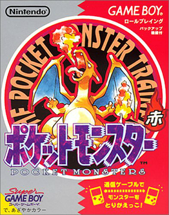
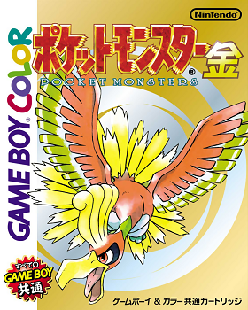
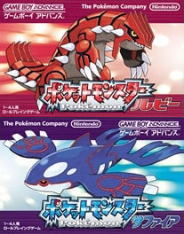
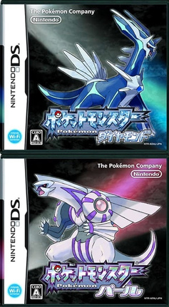
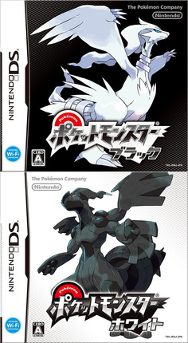
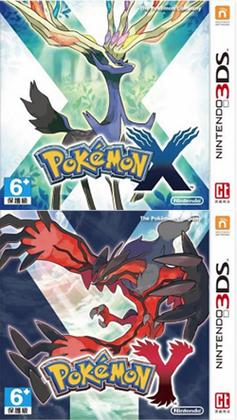
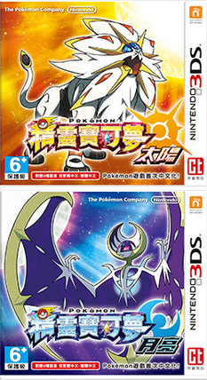
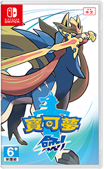
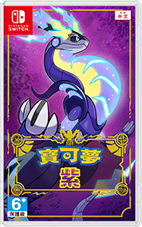

寶可夢（日版名：ポケットモンスター，Pocket Monsters，英文版名：Pokémon，舊譯「精靈寶可夢」、「神奇寶貝」）
是由Game Freak開發、任天堂與寶可夢公司發行的電子遊戲系列，為寶可夢跨媒體系列的一部分。
系列以角色扮演遊戲為核心，首部作品在1996年發行於Game Boy，後續作品登陸任天堂各世代遊戲機。
早期作品通常分為兩個版本，版本間有少許差異；新世代遊戲機上也會重製過往的作品。
除了主要的角色扮演遊戲外，系列還推出不同公司開發的各類衍生作品，類型涵蓋動作角色扮演、益智、格鬥、電子寵物等。
《寶可夢 紅／綠》是由GAME FREAK開發、任天堂發行的Game Boy
角色扮演遊戲，是《寶可夢》系列的開山之作。

《寶可夢 金／銀》是《寶可夢》系列第二世代的Game Boy Color遊戲,
由GAME FREAK開發並由任天堂發行。遊戲新增了100種新的寶可夢，
玩家可以在城都地區冒險，於遊戲過程中捕捉這些寶可夢，用它們進行戰鬥。

《寶可夢 紅寶石／藍寶石》是寶可夢系列第三世代的
Game Boy Advance遊戲由GAME FREAK開發並由任天堂發行。
《紅寶石》《藍寶石》《綠寶石》都是系列第三世代的遊戲又稱為「超世代」

《寶可夢 鑽石／珍珠》是由GAME FREAK開發，寶可夢公司
與任天堂發售於任天堂DS的角色扮演遊戲。
本作分為《鑽石》與《珍珠》版本，封面為帝牙盧卡和帕路奇亞。
兩種版本差異之處主要在於登場寶可夢與出現機率、寶可夢圖鑑說明文字的不同。

《寶可夢 黑／白》是Game Freak開發、任天堂與寶可夢公司
發行於任天堂DS平台的角色扮演遊戲與同系列的前幾款遊戲相近,
玩家在這兩款遊戲裡扮演一名年輕的寶可夢訓練家在合眾地區冒險，
玩家須要訓練寶可夢並與其它的訓練家對戰，並阻止反派組織電漿隊的陰謀。

《寶可夢 X／Y》是一款由GAME FREAK開發，由任天堂與寶可夢公司
聯合發行在任天堂3DS上的角色扮演遊戲。
超級進化：本作重要的新增內容，被稱為「超越進化的進化」。
玩家可以利用兩個版本的不同「超級石」為特定的寶可夢進行超級進化

《精靈寶可夢 太陽／月亮》是一款由Game Freak開發，寶可夢公司
與任天堂發行於任天堂3DS平台上的角色扮演遊戲。本作是第七世代的正統續作，
也是該慶祝系列誕生20年的紀念作品，同時也是系列首次官方中文化的作品

《寶可夢 劍／盾》是由GAME FREAK開發，寶可夢公司與任天堂發行，
並在任天堂Switch平台上發售的角色扮演遊戲。本作的舞台是以英國大不列顛島為原型的
「伽勒爾地區」，主角與鄰居赫普在得到伽勒爾地區的冠軍丹帝的推薦信後，
與各自的寶可夢展開冒險，並朝著成為當地的寶可夢訓練家比賽冠軍的目標而展開故事。

《寶可夢 朱／紫》是一款由GAME FREAK開發，寶可夢公司與任天堂
發行，並在任天堂Switch平台上發售的角色扮演遊戲
《寶可夢 朱／紫》延續了主系列作品的基本玩法，玩家可以透過捕捉或交換以獲得寶可夢，
並與寶可夢一同探索帕底亞地區、與其他訓練家進行對戰，與以往不同的是，
本作玩家可以自主選擇是否與路上的NPC訓練家對戰。
